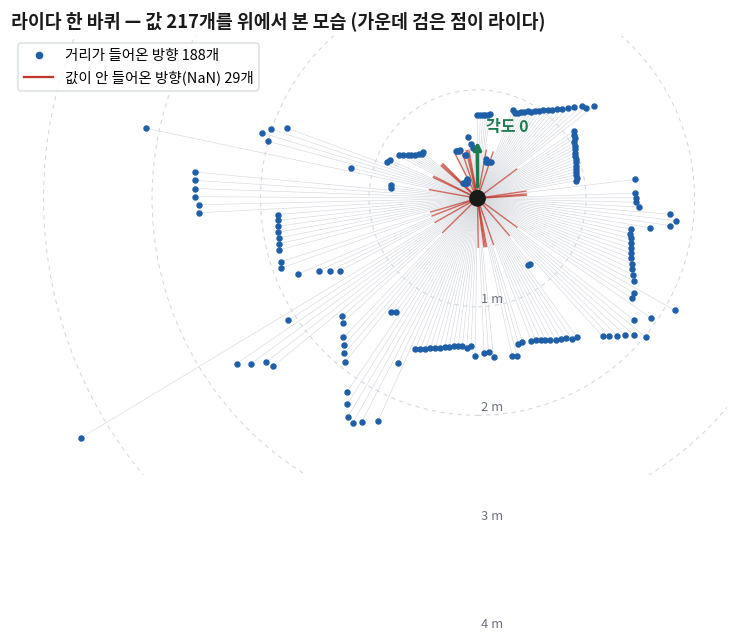
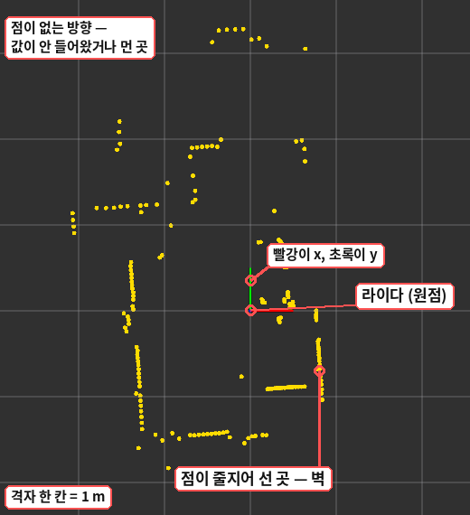
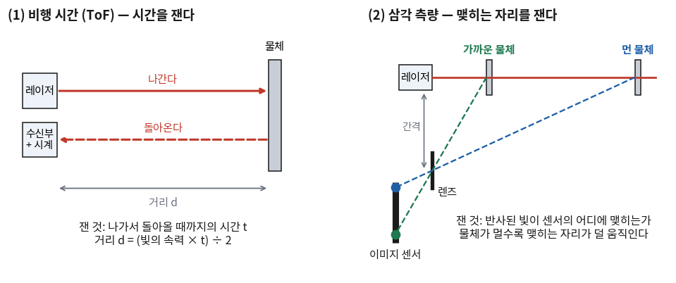
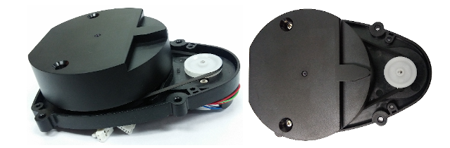
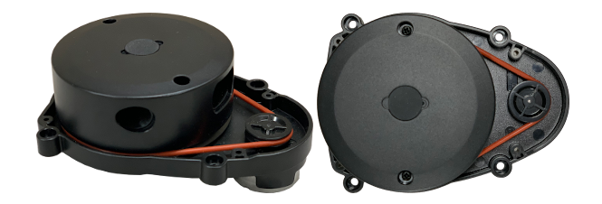
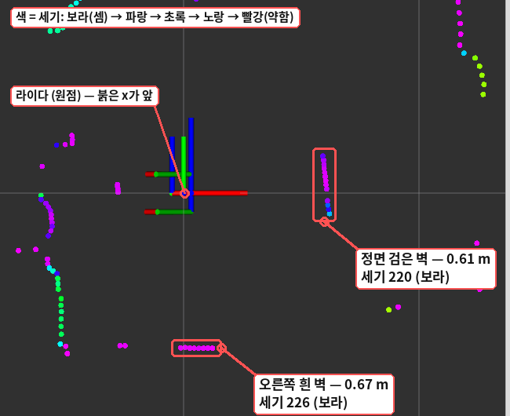
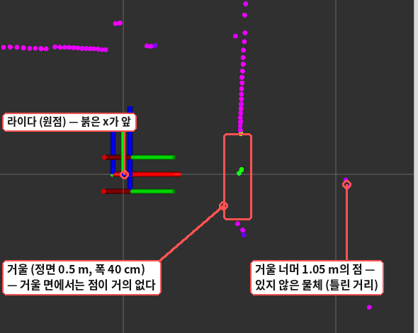

22회까지는 화면 속 거북이가 상대였다. 거북이의 위치는 /turtle1/pose가 소수점 아래까지 정확히 알려 줬고,
값이 빠지는 일도 없었다. 이제부터는 실물 로봇이다. 실물 로봇은 자기 둘레에 무엇이 있는지 센서로 재서 알아내야 하고,
잰 값은 흔들리고, 가끔은 아예 들어오지 않는다.
이 회차는 그 센서인 라이다가 무엇을 어떻게 재는지를 본다. 코드는 쓰지 않는다. 대신 터틀봇3에서 실제로 받은
/scan 한 프레임을 놓고, 그 숫자들이 왜 그렇게 생겼는지를 측정 원리와 사양표로 설명해 본다.
24회부터는 여러분이 로봇을 직접 켜고 이 값을 받아 코드로 다루게 되는데, 그때 「이 값을 믿어도 되나」를 판단하는 기준이 오늘 내용이다.
라이다의 한계는 코드로 고칠 수 없는 것이 많다. 에이전트에게 「라이다 값으로 콘을 찾아 줘」라고 시키면 코드는 금방 나오지만,
그 코드가 검은 콘을 못 본다는 것이나 3m 밖의 콘은 점 두 개로만 보인다는 것은 센서를 아는 사람만 미리 알 수 있다.
① 라이다(LiDAR)와 스캔 🔴 사람이 이해한다
로봇이 콘 사이로 지나가려면 무엇을 알아야 할까? 콘이 어느 방향으로, 얼마나 떨어져 있는지다.
카메라는 색과 모양은 잘 보지만 사진 한 장만으로는 거리를 바로 알기 어렵다. 거리를 직접 재 주는 센서가 따로 있으면 일이 훨씬 쉬워진다.
1-1 정의
라이다(LiDAR, Light Detection And Ranging)는 빛을 쏘고 물체에서 되돌아온 빛을 받아 그 물체까지의 거리를 재는 센서다.
레이저 한 줄기로는 한 방향의 거리 하나만 나온다. 그래서 터틀봇3에 달린 것 같은 2차원 라이다는 레이저를 모터로 빙빙 돌린다.
한 바퀴 도는 동안 조금씩 다른 방향으로 수백 번 재고, 그 결과를 한 묶음으로 내놓는다. 이 한 바퀴치 묶음을 스캔(scan)이라고 한다.
그러니 스캔 하나는 결국 「이 방향으로는 몇 m」라는 숫자의 줄이다. 17회에서 본 sensor_msgs/msg/LaserScan의
ranges 배열이 바로 그 줄이고, 터틀봇3는 그것을 /scan 토픽으로 발행한다.
1-2 실제 스캔 한 프레임
어떤 상황인가부터 세운다. 터틀봇3 버거 한 대를 실내에 두고 켰다. 둘레에는 벽과 가구, 이런저런 물건이 있다.
그 상태에서 받은 스캔 하나를 천장에서 내려다본 모양으로 그린 것이 아래 그림이다.
가운데 검은 점이 라이다이고, 파란 점 하나가 ranges의 값 하나다 — 라이다에서 그 방향으로 그 거리만큼 떨어진 자리에 찍었다.

터틀봇3 버거(LDS-02)에서 받은 스캔 한 프레임. 값은 217개였고 그중 188개에 거리가 들어왔다.
파란 점이 줄지어 선 곳이 벽과 가구다. 붉은 선은 값이 들어오지 않은 방향 29개다(⑥절). 점선 원은 1m 간격이다.
초록 화살표 「각도 0」이 로봇의 어느 쪽인지는 24회에서 물건을 놓아 보고 확인한다.
그림에서 먼저 볼 것은 두 가지다. 하나, 라이다가 내놓는 것은 「벽」이나 「상자」가 아니라 점이다. 점들이 한 줄로 서 있으면 사람 눈에는 벽으로 보이지만,
프로그램에게는 아직 숫자 217개일 뿐이다. 둘, 가까운 물체에는 점이 촘촘하고 먼 물체에는 성기다. 같은 각도 간격으로 쏘기 때문에 멀리 갈수록 점 사이가 벌어진다.
이 두 번째 성질이 ⑦절에서 「콘 하나에 점이 몇 개 찍히나」로 이어진다.
위 그림은 설명하려고 따로 그린 것이다. 로봇 컴퓨터에서 22회의 rviz2를 띄우면 같은 것을 살아 있는 화면으로 볼 수 있다. 아래가 같은 방을 rviz2로 본 모습이다.

rviz2에서 본 실물 스캔. 노란 점 하나가 거리 값 하나다. rviz2는 위에서 볼 때 x(빨강)를 오른쪽으로 그리므로 앞의 그림을 오른쪽으로 90도 돌린 모양이다.
점은 1초에 열 번쯤 새로 그려지고, 가만히 보고 있으면 먼 쪽의 점이 조금씩 떨리는 것이 보인다. 띄우는 법은 24회에서 직접 해 본다.
1-3 토픽으로 받은 모양
같은 스캔을 18회에서 배운 ros2 topic echo로 한 번만 받으면 이렇게 찍힌다. 로봇에서 실제로 받은 출력이고, 긴 배열은 가운데를 줄였다.
NaN(Not a Number, 「숫자가 아님」)을 이 출력 형식(YAML)에서 적는 모양이다. 그 방향으로는 거리를 못 쟀다는 표시로 들어 있다. ⑥절에서 다룬다.
'...'
ros2 topic echo는 배열이 길면 앞의 128개까지만 찍고 나머지를 '...'로 줄인다. 값이 거기서 끝난 것이 아니다.
전부 보고 싶으면 --full-length 옵션을 붙인다.
angle_increment: 0.0292…
이웃한 두 값 사이의 각도다. 단위가 라디안이라 낯설게 보인다. 도로 바꾸면 0.02928 × 180 ÷ π ≒ 1.68도다. 이 값이 왜 1도가 아닌지는 ⑤절에서 본다.
frame_id: base_scan
이 값들을 라이다 자신을 기준으로 쟀다는 표시다(17회 ⑪절). 26회에서 쓴다.
거리의 단위는 미터다. 첫 값 0.763…은 그 방향으로 76.3cm 앞에 무언가가 있다는 뜻이다.
소수점 아래가 길게 붙는 것은 측정이 그만큼 정밀해서가 아니라, 라이다가 준 0.763을 컴퓨터의 실수(float32)로 담았다가 다시 찍었기 때문이다.
이 라이다가 실제로 구별하는 것은 1mm 단위까지다.
② 비행 시간 (ToF) 🔴 사람이 이해한다
빛을 쏴서 거리를 잰다고 했는데, 정확히 무엇을 재면 거리가 나올까? 방식은 크게 둘이다. 먼저 생각하기 쉬운 쪽부터 본다.
2-1 정의와 산식
비행 시간(Time of Flight, 줄여서 ToF) 방식은 빛이 나갔다가 돌아오는 데 걸린 시간을 잰다.
빛의 속력은 정해져 있으니 시간만 알면 거리가 나온다. 메아리가 돌아오는 시간으로 절벽까지 거리를 어림하는 것과 같은 생각이다.
거리 d = (빛의 속력 c × 걸린 시간 t) ÷ 2
c = 299,792,458 m/s (1초에 약 30만 km)
÷ 2 는 빛이 갔다가 돌아와서 두 번 지나갔기 때문이다
2-2 숫자를 넣어 본다
물체까지 거리
빛이 갔다 오는 시간
1 m
약 6.7 ns (나노초, 10억분의 1초)
10 m
약 67 ns
100 m
약 670 ns
1 cm의 차이
약 67 ps (피코초, 1조분의 1초)
해석: 빛은 1m를 가는 데 약 3.3ns밖에 걸리지 않는다. 그래서 마지막 줄이 문제가 된다 —
거리를 1cm 단위로 구별하려면 시간을 67ps 단위로 재야 한다. 그렇게 빠른 시계를 가진 회로는 값이 나간다.
대신 이 방식은 빛만 돌아오면 되므로 먼 거리에 강하다. 자동차에 다는 라이다가 대체로 이쪽이다.
③ 삼각 측량 (Triangulation) 🔴 사람이 이해한다
방 안을 돌아다니는 작은 로봇은 100m 앞을 볼 일이 없다. 몇 m 안쪽만 재면 되는데 피코초를 재는 회로를 넣자니 아깝다.
시간을 재지 않고 거리를 알아내는 방법은 없을까?
3-1 정의
삼각 측량(triangulation) 방식은 시간 대신 위치를 잰다. 레이저 옆으로 조금 떨어진 자리에 렌즈와 이미지 센서(작은 카메라라고 보면 된다)를 둔다.
레이저가 물체에 닿아 생긴 빛점을 이 카메라가 비스듬히 본다. 그러면 물체가 가까우냐 머냐에 따라 빛점이 센서 위에 맺히는 자리가 달라진다.
그 자리를 읽어 거리로 바꾼다.

왼쪽 (1)은 ②절의 비행 시간 방식이다. 오른쪽 (2)가 삼각 측량이다 — 레이저(붉은 선)는 똑바로 나가고, 반사된 빛은 아래쪽 렌즈를 지나 센서에 맺힌다.
가까운 물체(초록)와 먼 물체(파랑)가 센서의 다른 자리에 맺히는 것을 본다. 레이저·렌즈·물체가 삼각형을 이루어서 붙은 이름이다.
3-2 숫자를 넣어 본다 — 멀수록 맺히는 자리가 덜 움직인다
그림의 삼각형 두 개(렌즈 앞쪽의 큰 것과 렌즈 뒤쪽의 작은 것)는 닮은꼴이다. 그래서 빛점이 맺히는 자리는 거리에 반비례한다.
거리가 두 배가 되면 맺히는 자리의 치우침은 절반이 된다. 1m일 때의 치우침을 1이라고 놓고 적어 보면 이렇다.
물체까지 거리
0.25 m
0.5 m
1 m
2 m
4 m
8 m
센서 위 치우침 (1m일 때를 1로)
4
2
1
0.5
0.25
0.125
해석: 0.25m에서 0.5m로 물러나면 치우침이 4에서 2로, 2만큼 움직인다. 4m에서 8m로 물러나면 0.25에서 0.125로, 0.125만큼만 움직인다.
먼 쪽은 거리가 4m나 달라졌는데도 센서 위에서는 거의 같은 자리다. 센서의 화소 크기는 정해져 있으므로
삼각 측량은 멀수록 거리를 잘게 구별하지 못한다. 반대로 너무 가까우면 빛점이 센서 바깥으로 나가 버려 아예 못 잰다.
재는 범위의 양쪽 끝이 이렇게 생긴다.
3-3 로봇에서 확인한 것 — 같은 방향을 100번 쟀다
정말 멀수록 덜 정확할까? 로봇과 둘레의 물건을 그대로 둔 채 스캔 100프레임(약 9초)을 받았다. 아무것도 움직이지 않았으니
같은 방향의 거리는 매번 같아야 하는데, 실제로는 조금씩 다르게 들어온다. 그 흔들림(표준편차)을 거리 구간별로 모으면 이렇다.
그 방향의 거리
방향 수
흔들림의 중앙값
0.5 m 안쪽
8
1.3 mm
0.5 ~ 1 m
17
4.6 mm
1 ~ 2 m
36
9.8 mm
2 ~ 3 m
5
31.9 mm
3 m 너머
3
42.2 mm
해석: 0.5m 안쪽에서는 1mm 남짓 흔들리던 값이 3m 너머에서는 4cm 넘게 흔들린다. 3-2의 표가 말한 그대로다.
터틀봇3 버거의 LDS-02 한 대를 실내에서 잰 값이고(3도마다 한 방향씩, 물체의 모서리에 걸려 값이 크게 튀는 방향은 뺐다),
방과 로봇이 다르면 숫자는 달라진다. 2m 너머는 방향 수가 적어서 「멀수록 커진다」는 경향까지만 읽는 것이 맞다.
우리 로봇의 라이다 LDS-02는 삼각 측량 방식이다. 만든 회사(LDROBOT)의 문서에 그렇게 적혀 있다.
그래서 ④절의 사양표에서 정확도가 거리 구간마다 다르게 적혀 있는 것이 우연이 아니다.
📖 라이다와 자율주행 경주 🟢 읽을거리
사막 경주에서 돌에 걸린 스피커 회사 — 지고 나서 센서를 만들었다 (15분 · 건너뛰어도 됩니다)
(1) 2004년 3월, 모하비 사막 — 아무도 완주하지 못했다
DARPA — 미국 국방부 아래에서 앞선 기술 연구에 돈을 대는 기관이다(Defense Advanced Research Projects Agency의 약자) — 가
2004년 3월 13일에 사람이 타지 않은 자동차의 경주를 열었다. 이름은 DARPA 그랜드 챌린지.
미국 서부 모하비 사막의 150마일(약 240km) 길을 스스로 달려 가장 먼저 들어오는 차에 상금 100만 달러를 주기로 했다.
결과는 완주 0대였다. 가장 멀리 간 차는 카네기멜런 대학교 팀의 샌드스톰(Sandstorm)이었는데, 굽은 길에서 길을 벗어나 둔덕에 걸렸다.
달린 거리는 약 12km로 전체의 5%에 못 미쳤다. 상금은 주인을 찾지 못했다.
(2) 참가팀 가운데 스피커 회사가 있었다
그날 출발선에 선 팀 중 하나가 Team DAD(Digital Auto Drive)다. 데이비드 홀(David Hall)과 브루스 홀(Bruce Hall) 형제의 팀이었고,
두 사람의 회사는 벨로다인(Velodyne)이었다. 벨로다인은 데이비드 홀이 세운 오디오 회사로, 낮은 음을 내는 스피커인 서브우퍼를 만들어 팔았다.
자동차와도 로봇과도 상관없는 회사였다.
형제의 차는 지붕에 카메라 두 대를 얹은 픽업트럭이었다. 6마일(약 9.7km)을 가다가 돌에 걸려 멈췄다.
(3) 여기가 재미있다 — 다음 대회에 들고 나온 것
데이비드 홀이 경주에서 얻은 결론은 「운전을 더 잘하게 만들자」가 아니었던 것 같다. 그는 둘레를 보는 센서부터 다시 만들었다.
레이저 64개를 세로로 늘어놓고 그 뭉치를 통째로 빙빙 돌리는 장치였다. 한 줄기가 아니라 64줄기가 한꺼번에 돌면서 둘레 360도를 3차원으로 훑는다.
2005년 10월의 2회 대회에 Team DAD는 지름 60cm쯤 되는 이 시제품을 트럭 지붕에 달고 나왔다. 그리고 또 완주하지 못했다.
26마일 지점에서 멈췄는데, 기록에 남은 까닭이 이렇다 — 진동으로 라이다의 전선이 풀렸다.
그 대회의 우승은 스탠퍼드 대학교의 스탠리(Stanley)가 가져갔다. 212km를 6시간 53분대에 달렸고, 지붕에는 독일 SICK 사의 라이다 다섯 개가 얹혀 있었다.
그런데 2년 뒤, 도심 도로를 본뜬 코스에서 열린 2007년 3회 대회(어반 챌린지)에서는 풍경이 달라져 있었다.
코스를 끝까지 달린 여섯 팀 가운데 다섯 팀의 지붕에서 홀이 만든 회전식 라이다가 돌고 있었다.
두 번 나가 두 번 다 못 들어온 팀의 센서를, 이긴 팀들이 사다 쓴 것이다.
(4) 그래서 지금 우리 손에 남은 것
「빛을 쏘는 장치를 돌려서 둘레 전체의 거리를 잰다」는 그 생각이, 레이저 한 줄기짜리로 줄어든 모양으로 지금 터틀봇3 위에서 돌고 있다.
(5) 숫자로 확인한다
0대 → 5대 → 6팀. 2004년 완주 0대, 2005년 5대(그중 한 대는 제한 시간 10시간을 넘겼다), 2007년에 코스를 끝까지 달린 팀이 여섯이다. 세 해 반 사이의 일이다.
약 12km ÷ 240km. 첫 대회에서 가장 멀리 간 차가 달린 비율이 5%에 못 미친다.
6팀 중 5팀. 2007년에 끝까지 달린 팀 가운데 벨로다인 라이다를 단 팀의 수다.
64줄기 대 1줄기. 홀의 라이다는 레이저 64개를 돌렸고 값은 한때 대당 7만 5천~8만 달러쯤으로 보도됐다. 터틀봇3의 라이다는 한 줄기를 돌린다.
초당 2,300번. 그 한 줄기짜리 LDS-02가 1초에 거리를 재는 횟수다(⑤절).
(6) 출처
Wikipedia — 「DARPA Grand Challenge (2004)」 · 「DARPA Grand Challenge (2005)」 · 「DARPA Grand Challenge (2007)」 · 「Stanley (vehicle)」 · 「Velodyne Lidar」 · 「David Hall (American businessman)」
LIDAR Magazine, 「Velodyne Donates LiDAR and Robotic Artifacts to Smithsonian」 (2011) — 2004년의 카메라 두 대, 2005년의 64레이저 시제품, 2007년의 「여섯 중 다섯」
미국 특허 US 7,969,558 「High definition lidar system」 (발명자 David S. Hall, 2007년 출원)
출처마다 조금씩 다른 숫자가 있다. 벨로다인의 설립 연도는 1983년으로 적은 글과 1979년으로 적은 글이 있고, 2004년에 가장 멀리 간 거리는 11.78km와 11.9km가 함께 나온다.
라이다 값도 2015~2017년의 기사에 나온 숫자다. 그래서 위에서는 설립 연도를 적지 않았고 거리는 「약 12km」로 적었다.
④ 터틀봇3의 라이다 — LDS-01 · LDS-02 · LDS-03 🔴 사람이 확인한다
터틀봇3는 2017년부터 팔린 로봇이라 그사이에 달려 나오는 라이다가 바뀌었다. 우리 수업의 로봇에도 종류가 섞여 있다.
옆자리 로봇과 내 로봇의 라이다가 다를 수 있다는 뜻이고, 그러면 받는 값의 개수도 범위도 달라진다. 내 것이 어느 쪽인지부터 알아 두면 뒤에서 덜 헤맨다.
4-1 세 가지 라이다
터틀봇3를 만드는 로보티즈(ROBOTIS)는 라이다에 LDS(Laser Distance Sensor)라는 이름과 번호를 붙여 부른다.
로보티즈의 안내에 따르면 2022년부터 LDS-02가 LDS-01을 대신했고, 2025년부터는 LDS-03이 LDS-02를 대신하고 있다.

LDS-01. 도는 부분 옆의 도르래가 흰색이다. (사진: ROBOTIS)

LDS-02. 벨트가 주황색이고 원통 옆면에 렌즈 구멍이 뚜렷하다. (사진: ROBOTIS)
무엇을 먼저 볼지: 측정 거리와 샘플링 두 줄이다. 나머지 줄은 ⑤~⑦절에서 하나씩 쓴다.
항목
LDS-01
LDS-02
LDS-03
다른 이름 · 만든 곳
HLS-LFCD2 · HLDS(Hitachi-LG Data Storage)
LD08 · LDROBOT
COIN-D4
측정 거리
0.12 ~ 3.5 m
0.16 ~ 8 m
0.05 ~ 12 m
거리 정확도
0.5 m 안쪽 ±15 mm 0.5 ~ 3.5 m ±5%
0.3 m 안쪽 ±10 mm 0.3 ~ 6 m ±3%
1 m 안쪽 ±10 mm 1 m 너머 ±20 mm
샘플링 (1초에 재는 횟수)
1,800번
2,300번 (고정)
4,000번 (고정)
스캔 주파수 (1초에 도는 횟수)
5바퀴 (300 rpm)
5바퀴 이상 — 제품마다 다를 수 있다
10바퀴 — 제품마다 다를 수 있다
각도 해상도
1도
1도 — 스캔 주파수에 따라 달라진다
0.9도 — 스캔 주파수에 따라 달라진다
ROS 2 드라이버 패키지
hls_lfcd_lds_driver
ld08_driver
coin_d4_driver
LDS_MODEL에 적는 값
LDS-01
LDS-02
LDS-03
해석: 측정 거리의 아래쪽 끝도 눈여겨본다. LDS-02는 16cm보다 가까운 것을 재지 못한다. 로봇이 콘에 바짝 붙으면 그 콘이 스캔에서 사라질 수 있다는 뜻이다.
정확도가 「몇 mm」가 아니라 「몇 %」로 적힌 구간은 멀수록 오차가 커진다는 말이고, ③절의 삼각 측량과 맞아떨어진다.
(LDS-01과 LDS-03의 측정 방식은 로보티즈 문서에 적혀 있지 않아 여기서는 말하지 않는다.)
🆕 표에서 처음 나오는 것
샘플링(sampling)과 스캔 주파수(scan frequency)
둘 다 「1초에 몇 번」이지만 세는 것이 다르다. 샘플링은 거리 값 하나를 재는 횟수이고, 스캔 주파수는 라이다가 도는 바퀴 수다.
단위는 둘 다 Hz(헤르츠, 1초에 몇 번)로 적는다. 1,000Hz를 1kHz라고도 쓴다.
rpm
1분에 도는 바퀴 수(revolutions per minute)다. 300rpm ÷ 60 = 1초에 5바퀴.
각도 해상도(angular resolution)
이웃한 두 측정 사이의 각도다. 메시지의 angle_increment가 이 값을 담는다.
4-2 내 로봇의 라이다 확인하기
눈으로 보는 것 말고 로봇에게 물어보는 방법이 있다. 터틀봇3는 LDS_MODEL이라는 환경변수(3회)를 보고 어느 드라이버를 띄울지 고른다.
그 값은 로봇 컴퓨터의 ~/.bashrc에 적혀 있다.
$ echo $LDS_MODEL
LDS-02
이 값이 실물과 맞는지는 로봇을 켰을 때 드라이버가 찍는 줄에서 확인할 수 있다. 아래는 LDS-02가 달린 로봇을 켰을 때 실제로 찍힌 줄의 일부다.
로봇을 켜는 명령은 24회에서 직접 쳐 본다.
[ld08_driver-2] /dev/ttyACM0 OpenCR Virtual ComPort in FS Mode
[ld08_driver-2] /dev/ttyUSB0 CP2102 USB to UART Bridge Controller
[ld08_driver-2] FOUND LDS-02
[ld08_driver-2] LDS-02 started successfully
켜진 뒤 18회의 ros2 node list를 치면 라이다 드라이버가 노드로 보인다.
$ ros2 node list
/diff_drive_controller
/ld08_driver
/robot_state_publisher
/turtlebot3_node
/ld08_driver가 LDS-02의 드라이버 노드다. 이 노드가 라이다와 직렬 통신으로 값을 받아 /scan 토픽으로 발행한다.
⚠️ LDS_MODEL이 실물과 다르면
다른 라이다용 드라이버가 뜨므로 /scan이 나오지 않을 수 있다. 로봇을 서로 바꿔 쓰거나 라이다를 갈아 끼운 뒤에 생기기 쉬운 일이다.
「코드는 그대로인데 오늘은 스캔이 안 온다」 싶으면 코드를 고치기 전에 이 값부터 보는 것이 빠르다.
고치는 법은 28회에서 다룬다.
⑤ 사양표와 실제 /scan🔴 사람이 대조한다
사양표에는 LDS-02의 각도 해상도가 1도라고 적혀 있다. 한 바퀴가 360도이니 값이 360개 들어올 것 같다. 그런데 ①절에서 받은 스캔은 217개였다.
사양표가 틀린 걸까, 로봇이 고장 난 걸까?
5-1 한 바퀴의 값 개수 = 샘플링 ÷ 스캔 주파수
둘 다 아니다. 사양표를 다시 보면 LDS-02의 샘플링은 2,300번으로 고정이고, 각도 해상도 옆에는 「스캔 주파수에 따라 달라진다」고 적혀 있다.
1초에 재는 횟수가 정해져 있으니, 그 1초 동안 몇 바퀴를 도느냐에 따라 한 바퀴에 떨어지는 값의 개수가 달라진다.
한 바퀴의 값 개수 = 샘플링 ÷ 스캔 주파수
이웃한 값 사이 각도 = 360도 ÷ 한 바퀴의 값 개수
그러면 이 로봇은 1초에 몇 바퀴를 돌고 있을까? 스캔 하나가 한 바퀴이므로 /scan이 1초에 몇 번 오는지 재면 된다. 18회의 ros2 topic hz다.
한 바퀴의 값 개수 = 2,300 ÷ 10.63 ≒ 216개
이웃한 값 사이 각도 = 360 ÷ 216 ≒ 1.67도
받은 스캔의 217개, angle_increment의 1.68도와 맞는다. 「1도」는 5바퀴쯤으로 천천히 돌 때의 이야기다 — 2,300 ÷ 5 = 460개이면 간격이 0.78도이니 1도보다 촘촘하다.
이 로봇은 그 두 배로 빨리 돌고 있어서 한 바퀴의 값이 절반쯤으로 줄었다. 자주 받는 대신 성기게 받는 셈이다.
5-2 프레임마다 달라지는 값
모터가 도는 빠르기는 조금씩 흔들린다. 그래서 값의 개수도 매번 같지 않다. ③절에서 받은 100프레임을 세어 보면 이렇다.
ranges 길이별 프레임 수: {214: 3, 215: 63, 216: 34}
angle_min: 0.0007 ~ 0.0308 rad
angle_increment: 1.659 ~ 1.676 도
scan_time: 0.0934 ~ 0.0943 s (평균 0.0938)
NaN 개수: 20 ~ 31 (평균 24.8), inf 0개, 0.0 0개
유효 거리: 0.174 ~ 5.022 m
해석: 첫 줄을 본다. 100프레임 가운데 63번은 215개, 34번은 216개, 3번은 214개였다. 배열의 길이가 프레임마다 다르다.
둘째 줄의 angle_min(첫 값의 각도)도 0에서 0.03 라디안(약 1.8도) 사이를 오간다. 그러니 「배열의 몇 번째 값이 어느 방향인가」는
프레임마다 조금씩 달라진다. 번호만 보고 방향을 정하면 안 되는 까닭이고, 24회의 첫 주제가 된다.
5-3 사양표의 값과 메시지의 값
무엇을 먼저 볼지: 셋째 줄이다. 사양과 메시지가 가장 크게 어긋나는 자리다.
무엇
LDS-02 사양표
이 로봇의 /scan
왜 다른가
1초에 오는 스캔 수
5 이상
약 10.6
「이상」이다. 제품마다 다를 수 있다고 적혀 있다
이웃한 값 사이 각도
1도
약 1.67도
빨리 도는 만큼 성기다 (5-1)
측정 거리
0.16 ~ 8 m
range_min: 0.0 range_max: 100.0
드라이버가 이 두 칸에 라이다의 사양이 아닌 값을 적어 보낸다
실제로 들어온 거리
—
0.174 ~ 5.02 m
그 방에서 가장 가까운 것과 가장 먼 것까지의 거리다
해석: 17회에서 range_min·range_max를 「이 범위 밖의 값은 버리라는 기준」이라고 읽었다. 메시지 정의의 주석도 그렇게 말한다.
그런데 이 로봇의 드라이버는 거기에 0과 100을 넣어 보낸다. 100m까지 재는 라이다가 아닌데도 그렇다.
그러니 이 두 칸만 믿고 거르면 걸러지는 것이 없다. 믿을 수 있는 범위는 사양표에서 찾아야 하고, 그것은 사람이 읽어서 코드에 알려 줘야 하는 값이다.
실제로 들어온 값 가운데 가장 작은 것이 0.174m인 것도 사양의 0.16m와 맞는다.
⑥ 값이 들어오지 않는 방향 — NaN 🔴 사람이 이해한다
①절의 그림에는 붉은 선이 29개 있었다. 217방향 가운데 29방향은 거리가 들어오지 않았다는 뜻이다. 라이다가 돌고 있는데도 왜 빈 방향이 생길까?
6-1 값이 들어오지 않는 네 가지 경우
라이다는 되돌아온 빛으로 잰다. 그러니 빛이 돌아오지 않거나, 돌아왔는데 잴 수 없는 자리로 가면 값이 없다. 흔한 경우는 넷이다.
경우
무슨 일이 생기나
콘 트랙에서 만나는 자리
너무 가깝다
빛점이 센서 바깥에 맺힌다 (③절). LDS-02는 0.16m 안쪽
콘에 바짝 붙었을 때
너무 멀다
돌아온 빛이 너무 약하다. 삼각 측량이면 맺히는 자리도 구별이 안 된다
콘 사이의 빈 곳으로 나간 빛 — 그 뒤에 벽이 멀면 값이 없다
검은 물체
빛을 흡수하는 재질이면 돌려보내는 것이 적다. 단, 눈에 검어도 라이다의 빛은 잘 돌려보내는 재질도 있다(아래)
검은 콘, 검은 바퀴, 검은 가방
유리 · 거울 · 반짝이는 금속
빛이 통과하거나 엉뚱한 쪽으로 튄다. 값이 없거나 틀린 거리가 들어온다
유리문, 창, 금속 책상 다리
해석: 마지막 줄이 가장 까다롭다. 값이 아예 없으면 「없다」고 알 수 있지만, 그럴듯한 틀린 값은 숫자만 봐서는 가려낼 수 없다.
그리고 넷 다 코드로는 고칠 수 없다. 검은 콘을 못 보는 것은 프로그램의 잘못이 아니라 빛의 성질이다. 그래서 트랙에는 밝은 색 콘을 쓴다.
LDS-02가 달린 로봇 앞에 물건을 대 보면 어떻게 나올까? 세 가지를 해 봤다. 세기는 ①절 출력의 intensities에 들어 있는 값이다 — LDS-02는 점마다 붙여 보내는 신뢰도 숫자를 넣는데, 반사가 셀수록 크다.
손바닥을 라이다에 바짝 댔다. 손이 다가오는 동안 한 프레임은 0.161m가 찍혔고, 대고 있는 동안은 정면 값이 내내 nan이었다. 표의 첫 줄 그대로다 — 너무 가까운 것은 「가깝다」가 아니라 「못 쟀다」로 들어온다.
정면에 검은 벽, 오른쪽에 흰 벽을 세웠다. 20프레임을 모아 보면 검은 벽은 0.609m, 흰 벽은 0.665m로 둘 다 몇 mm 안에서 고르게 들어왔다.
nan은 검은 벽 쪽 197개 중 8개, 흰 벽 쪽 240개 중 2개였다. 되돌아온 빛의 세기(intensities)는 검은 벽 220, 흰 벽 226으로 거의 같았다 — 이 방에서 나온 세기가 60~230이니 둘 다 센 축이다.
정면 0.5m에 폭 40cm 거울을 세웠다. 거울이 가린 각도 안의 값 1281개 가운데 82%가 nan이었다.
남은 값도 거울까지의 0.5m가 아니라 대부분 1.0~1.1m, 1.9~2.2m였다 — 거울에 튕겨 나간 빛이 다른 물체를 잰 것으로 보인다. 거울의 틀만 0.58~0.62m로 제대로 잡혔다.
라이다 정면 5cm에 손바닥을 댄 때와 뗀 때. 손바닥은 「가까운 점」으로 찍히지 않고 점이 아예 없다 — 너무 가까워 못 잰 것이다.
손이 라이다를 넓게 가려 뒤의 벽까지 같이 사라졌다.

rviz2에서 LaserScan의 Color Transformer를 Intensity로 바꾸면 점의 색이 세기를 나타낸다.
상자 친 두 벽이 같은 보라색이다 — 검은 벽과 흰 벽의 세기가 거의 같다. 왼쪽 아래의 초록 점들은 세기가 더 약한 다른 물건이다.

정면 0.5m의 거울. 거울 면에서는 점이 거의 없고, 거울 너머에 점이 찍혔다. 거울 뒤는 빛이 지나갈 수 없으니 이 점들은 그럴듯한 틀린 거리다 — 표의 마지막 줄 그대로다.
투명한 유리는 어떨까? 유리는 빛의 일부는 돌려보내고 일부는 통과시킨다. 그래서 같은 유리 앞에서도 세 가지가 섞여 나올 수 있다 —
유리 면 자체가 찍히기도 하고, 빛이 유리를 지나 유리 뒤의 벽이 찍히기도 하고, 유리에서 튄 빛 때문에 엉뚱한 자리에 점이 찍히기도 한다.
어느 쪽이 나오는지는 유리를 보는 각도와 거리에 따라 달라지는 경우가 많다. 유리문 앞을 지나는 로봇에게 그 문은 있기도 하고 없기도 한 셈이다.
해석: 검은 벽이 흰 벽만큼 잘 잡힌 것은 표와 어긋나 보이지만, 「눈에 검다」와 「라이다에 검다」가 다른 이야기라서 그렇다.
라이다는 사람 눈에 안 보이는 적외선을 쓰는 경우가 많고, 같은 검은색이라도 재질에 따라 그 빛을 잘 돌려보내기도 한다.
다만 이것은 60cm 거리에서 벽을 똑바로 마주 본 경우다. 거리가 더 멀어지고 빛을 받는 각도가 비스듬해지면 돌아오는 빛이 약해져, 검은 물체부터 안 보일 수도 있다.
그러니 트랙에 쓸 물건은 눈으로 고르지 말고 라이다로 한 번 비춰 보고 고르는 것이 좋다.
6-2 못 잰 방향은 NaN으로 들어온다
값이 없는 방향을 배열에서 빼 버리면 그 뒤의 값들이 한 칸씩 당겨져 방향이 다 틀어진다. 그래서 드라이버는 자리는 그대로 두고 「숫자가 아니다」라는 표시를 넣는다.
그것이 ①절 출력에 보인 .nan, 곧 NaN이다. 5-2의 100프레임에서는 한 프레임에 20~31개가 NaN이었다.
NaN은 13회에서 한 번 만났다. NaN은 어떤 값과 비교해도 거짓이 나온다. NaN < 0.3도 거짓이고 NaN > 0.3도 거짓이다.
그래서 「정면 값이 0.3보다 작으면 멈춘다」는 판정에 NaN이 들어가면 멈추지 않는다. 가장 작은 값을 찾는 알고리즘에 NaN이 섞이면 결과가 틀어질 수 있다는 것도 그때 봤다.
실물 로봇에서는 이것이 가끔이 아니라 매 프레임 일어난다.
⚠️ 못 잰 값을 어떻게 적는지는 드라이버마다 다를 수 있다
이 로봇(LDS-02, ld08_driver)에서는 못 잰 방향이 전부 NaN이었고, inf(무한대)나 0.0은 100프레임 동안 한 번도 없었다.
그런데 다른 라이다의 드라이버는 「너무 멀어서 못 쟀다」를 inf로, 또는 0.0으로 적어 보내기도 한다.
그래서 값을 쓰기 전에는 NaN · inf · 0 · 사양 범위 밖을 전부 걸러 두는 편이 안전하다. 거르는 코드는 24회에서 쓴다.
⑦ 정확도와 점의 개수 🔴 사람이 계산한다
사양표의 숫자 두 개 — 정확도와 각도 간격 — 를 프로젝트의 물건에 대 본다. 지름 20cm쯤 되는 콘이 라이다에 어떻게 보일지를 미리 알 수 있다.
7-1 정확도 ±3% — 거리가 얼마나 틀릴 수 있나
LDS-02는 0.3~6m에서 ±3%다. 「%」이므로 거리에 곱한다.
실제 거리
±3%
읽힐 수 있는 범위
0.5 m
±1.5 cm
0.485 ~ 0.515 m
1 m
±3 cm
0.97 ~ 1.03 m
2 m
±6 cm
1.94 ~ 2.06 m
3 m
±9 cm
2.91 ~ 3.09 m
해석: 2m 앞 콘의 거리는 6cm까지 틀릴 수 있다. 콘 지름이 20cm인데 6cm면 작지 않다.
그래서 점 하나의 값으로 콘의 위치를 정하지 않는다. 콘에 찍힌 점 여러 개를 함께 써서 어림하는 쪽이 낫고, 27회에서 그렇게 한다.
사양표의 정확도는 「이 안에 들어온다」는 보증의 한계이고, ③절에서 잰 흔들림(1~2m에서 1cm쯤)은 한 자리에서 거듭 쟀을 때 값이 퍼지는 정도다. 둘은 다른 숫자다.
7-2 콘 하나에 점이 몇 개 찍히나
라이다에서 본 콘은 어떤 각도만큼의 폭을 차지한다. 그 각도를 이웃한 값 사이 각도로 나누면 콘에 찍히는 점의 개수가 나온다.
지름 20cm(반지름 0.1m) 콘이 거리 d에 있을 때 차지하는 각도는 이렇게 구한다.
콘이 차지하는 각도 = 2 × atan(0.1 ÷ d)
찍히는 점의 개수 ≒ 그 각도 ÷ 이웃한 값 사이 각도(이 로봇은 약 1.67도)
콘까지 거리
콘이 차지하는 각도
찍히는 점 (간격 1.67도)
1 m
11.4도
약 7개
2 m
5.7도
약 3개
3 m
3.8도
약 2개
해석: 1m 앞의 콘은 점 일곱 개로 보이지만 3m 앞의 콘은 두 개뿐이다. 점 두 개는 잡음과 구별하기 어렵다.
「라이다가 8m까지 잰다」는 것과 「8m 앞의 콘을 알아본다」는 것은 다른 이야기다. 이 로봇이 콘을 콘으로 알아볼 수 있는 거리는 2m 안팎이라고 보고 주행을 설계하는 것이 무난하다.
라이다가 다르면 이 숫자도 달라진다 — 간격이 1도인 라이다라면 1m에서 11개, 3m에서 4개쯤이다.
🆕 산식에서 처음 나오는 것
atan
아크탄젠트. 「높이 ÷ 밑변」의 비율을 넣으면 그 비율을 만드는 각도를 돌려주는 함수다. 계산기의 tan⁻¹과 같다.
여기서는 콘의 반지름(0.1m)과 거리(d)로 「콘의 가장자리가 가운데에서 몇 도 벌어져 보이나」를 구하고, 양쪽 가장자리가 있으니 2를 곱했다.
⑧ 콘 트랙 프로젝트 🔴 사람이 설계한다
1회에서 예고한 학기 프로젝트를 여기서 다시 꺼낸다. 드문드문 세워진 콘 두 줄 사이를 터틀봇3가 스스로 따라 달리는 것이다.
오늘 본 라이다의 성질을 알고 나면 이 과제가 어디서 어려워지는지가 보인다.
오늘 본 것
프로젝트에서 뜻하는 것
라이다는 점을 내놓는다 (①절)
「콘」은 어디에도 적혀 있지 않다. 점들 가운데서 콘을 찾아내야 한다
값이 프레임마다 흔들린다 (③절)
점 하나가 아니라 여러 점을 묶어서 판단한다
배열 길이와 첫 각도가 프레임마다 다르다 (⑤절)
번호가 아니라 각도로 방향을 정한다
못 잰 방향은 NaN이다 (⑥절)
거르지 않으면 판정이 조용히 틀린다
멀수록 점이 준다 (⑦절)
가까운 콘 몇 개만 믿고 달린다
앞으로 네 회차가 이 흐름을 한 단계씩 채운다.
/scan (방향마다 거리 하나)
↓ 못 잰 값 · 범위 밖의 값 거르기, 방향을 각도로 찾기 24회
↓ 거리와 각도를 평면 위의 좌표로 바꾸기 25회
↓ 라이다 기준 좌표를 로봇 몸체 기준으로 옮기기 26회
↓ 가까운 점끼리 묶어 콘 찾기 → 좌우 콘 사이로 방향 잡기 27회
/cmd_vel (바퀴에 보내는 속도 명령)
24회부터는 한 사람이 로봇 한 대씩을 맡아, 로봇에 달린 컴퓨터에서 직접 실습합니다. 오늘 화면으로만 본 출력을 그때 자기 로봇에서 받아 보게 됩니다.
자기 로봇의 숫자가 이 자료의 숫자와 조금 다르게 나오는 것은 정상입니다 — 방이 다르고, 라이다가 다를 수 있습니다.
✅ 확인 — 사양표로 계산하기 🔴 사람이 계산한다
이걸 해 보면 무엇을 알게 되나
사양표의 숫자 서너 개만으로 「내 로봇의 스캔이 어떻게 생겼을지」를 로봇을 켜기 전에 어림할 수 있다는 것.
24회에 자기 로봇에서 받은 값이 이 어림과 맞는지 대 보면, 로봇이 정상인지를 스스로 판단할 수 있다.
준비물
④절의 사양표, 계산기(휴대폰이면 된다). 로봇과 터미널은 쓰지 않는다
절차
(3분) LDS-01은 샘플링이 1초에 1,800번이고 1초에 5바퀴를 돈다. 한 바퀴에 값이 몇 개이고, 이웃한 값 사이는 몇 도인가?
(3분) LDS-03은 샘플링이 4,000번이고 10바퀴를 돈다. 같은 것을 구한다.
(4분) 2번에서 구한 간격으로, 지름 20cm 콘이 2m 앞에 있을 때 점이 몇 개쯤 찍히는지 구한다. ⑦절 표의 LDS-02(약 3개)와 견주어 본다.
(3분) LDS-01의 정확도는 0.5~3.5m에서 ±5%다. 2m 앞 콘의 거리는 어디에서 어디 사이로 읽힐 수 있나? LDS-02(1.94~2.06m)와 견주어 본다.
(2분) 로봇이 콘에서 10cm 떨어져 있다. LDS-01 · LDS-02 · LDS-03 가운데 이 콘의 거리를 잴 수 있는 것은 어느 것인가?
이렇게 되면 성공이다
번호
답
어떻게
1
360개, 1도
1,800 ÷ 5 = 360 · 360도 ÷ 360
2
400개, 0.9도
4,000 ÷ 10 = 400 · 360도 ÷ 400
3
약 6개
5.7도 ÷ 0.9도 ≒ 6.3
4
1.90 ~ 2.10 m
2m × 5% = 10cm
5
LDS-03뿐
측정 거리의 아래쪽 끝이 0.12m · 0.16m · 0.05m
1번의 답이 사양표의 「1도」와, 2번의 답이 「0.9도」와 똑같이 나온다. 사양표의 각도 해상도는 따로 정한 숫자가 아니라 샘플링과 스캔 주파수에서 나온 숫자라는 것이 확인된다.
그리고 3번에서 보듯 같은 콘이라도 라이다에 따라 점의 개수가 두 배쯤 다르다. 옆자리의 코드가 내 로봇에서 그대로 통하지 않을 수 있는 까닭이다.
이 자료의 출력과 측정값은 터틀봇3 버거(LDS-02, 우분투 24.04 + ROS 2 Jazzy) 한 대에서 받은 것이다. 거리 값과 NaN의 개수는 방과 로봇에 따라, 그리고 받을 때마다 조금씩 다르다.
LDS-01과 LDS-03의 숫자는 로보티즈의 사양표에서 옮긴 것이고 그 라이다로 직접 받아 본 값은 아니다.
한 장 요약
무엇을 먼저 볼지: 오른쪽 「이것만 알면 된다」 열이다.
용어
한 줄 정의
이 로봇(LDS-02)에서 본 값
이것만 알면 된다
라이다 (LiDAR) · 스캔
빛을 쏴서 거리를 재는 센서 · 한 바퀴치 거리 값 묶음
/scan, 한 프레임에 214~217개
내놓는 것은 물체가 아니라 방향마다 거리 하나다
비행 시간 (ToF)
빛이 갔다 오는 시간을 잰다
—
1cm를 가리려면 67ps를 재야 한다. 먼 거리에 강하다
삼각 측량 (triangulation)
반사된 빛이 센서에 맺히는 자리를 잰다
0.5m 안쪽 흔들림 1.3mm, 3m 너머 42mm
멀수록 덜 정확하다. 너무 가까워도 못 잰다
샘플링 · 스캔 주파수
1초에 재는 횟수 · 1초에 도는 바퀴 수
2,300번 · 약 10.6바퀴
한 바퀴의 값 개수 = 샘플링 ÷ 스캔 주파수
각도 해상도
이웃한 값 사이의 각도 (angle_increment)
약 1.67도 (사양표는 1도)
빨리 돌수록 성기다. 개수도 첫 각도도 프레임마다 다르다
측정 거리
잴 수 있는 가장 가까운 거리와 가장 먼 거리
사양 0.16~8m, 메시지에는 0.0과 100.0
range_min·range_max가 사양과 다를 수 있다. 사양표를 본다
NaN
「숫자가 아님」 — 그 방향은 못 쟀다는 표시
한 프레임에 20~31개
비교하면 언제나 거짓. 쓰기 전에 거른다
정확도 ±3%
잰 거리가 실제와 다를 수 있는 한계
2m에서 ±6cm
점 하나로 위치를 정하지 않는다
LDS_MODEL
어느 라이다 드라이버를 띄울지 정하는 환경변수
LDS-02 → /ld08_driver
실물과 다르면 /scan이 안 온다
해석: 아홉 줄을 한 문장으로 줄이면 이렇다 — 라이다의 값은 성기고, 흔들리고, 가끔 비어 있다.
그 세 가지를 얼마나 성긴지(각도 해상도), 얼마나 흔들리는지(정확도), 언제 비는지(네 가지 경우)로 나눠 본 것이 오늘이다.
🤖 오늘 나온 프롬프트 모음 🟢 맡긴다
오늘은 코드를 쓰지 않았지만, 사양을 찾고 정리하는 일은 에이전트가 잘하는 편이다. 다만 숫자는 지어내기 쉬운 자리라서 출처를 같이 받아 두는 것이 좋다.
터틀봇3에 쓰이는 라이다 LDS-01, LDS-02, LDS-03의 측정 거리, 거리 정확도, 샘플링 레이트, 스캔 주파수, 각도 해상도를 ROBOTIS e-Manual에서 찾아 표로 정리해 줘. 항목마다 어느 페이지에서 봤는지 주소를 붙이고, 페이지에서 확인하지 못한 칸은 추측하지 말고 「확인 못 함」이라고 적어 줘.
내 2차원 라이다는 샘플링이 초당 2300번이고 /scan이 초당 10.6번 와. 한 바퀴에 값이 몇 개 들어오는지, 이웃한 값 사이가 몇 도인지 계산 과정을 한 줄씩 보여 줘. 그 간격으로 지름 20cm 물체가 1m, 2m, 3m 앞에 있을 때 점이 몇 개씩 찍히는지도 표로 만들어 줘.
이 디렉터리의 라이다 드라이버 소스에서 LaserScan 메시지의 range_min, range_max 값을 어디서 어떤 값으로 채우는지, 그리고 못 잰 방향의 ranges 값을 무엇으로 채우는지(NaN, inf, 0 중 무엇인지) 찾아서 파일 이름과 줄 번호와 함께 알려 줘. 코드는 고치지 마.
프롬프트
받은 뒤 사람이 확인하는 것
사양 정리
붙여 준 주소를 열어 숫자 두세 개를 직접 대조한다. ④절의 표와 다르면 어느 쪽이 맞는지 페이지에서 가린다
값 개수 계산
⑤절과 ⑦절의 숫자(216개 · 1.67도 · 7 · 3 · 2개)와 맞나
드라이버 소스 찾기
알려 준 파일의 그 줄을 직접 열어 본다. 로봇에서 받은 ros2 topic echo /scan --once의 값과 맞나
✅ 오늘의 점검
조금 더 알아두면 시험 범위 아님
드라이버는 range_max에 왜 100을 넣나 — 소스를 열어 보면
LDS-02의 드라이버 ld08_driver는 소스가 공개돼 있고, 로봇의 ~/ros_ws/src/ld08_driver/src/lipkg.cpp에 들어 있다.
스캔 메시지를 채우는 자리를 보면 까닭이 그대로 적혀 있다.
첫 두 줄이 5-3의 0.0과 100.0이다. 라이다에게 물어본 값이 아니라 코드에 적어 둔 숫자다.
셋째 줄의 mSpeed는 라이다가 알려 주는 회전 빠르기(1초에 몇 도)이고 2300은 샘플링이다 — 5-1의 산식을 코드로 옮긴 것이다.
마지막 줄은 배열 전체를 먼저 NaN으로 채운다. 그 뒤에 실제로 잰 값만 제자리에 덮어쓰므로, 못 잰 방향에는 NaN이 그대로 남는다.
삼각 측량의 식 — 닮은꼴 삼각형
③절 그림에서 레이저와 렌즈 사이의 간격을 s, 렌즈에서 센서까지의 거리를 f, 물체까지의 거리를 d, 빛점이 센서 위에서 치우친 정도를 x라고 하자.
렌즈 앞쪽의 큰 삼각형(밑변 d, 높이 s)과 렌즈 뒤쪽의 작은 삼각형(밑변 f, 높이 x)이 닮은꼴이므로 이렇게 된다.
x ÷ f = s ÷ d → d = f × s ÷ x
f와 s는 라이다를 만들 때 정해지는 값이니, 센서에서 x만 읽으면 d가 나온다. d가 x에 반비례하므로 x가 작은 쪽(먼 쪽)에서는 x가 화소 하나만큼만 달라져도 d가 크게 달라진다.
3-2의 표가 이 식에서 나온 것이다.
3차원 라이다와 2차원 라이다
📖 이야기의 벨로다인 라이다는 레이저 64개를 세로로 늘어놓아 위아래로도 본다. 한 바퀴 돌면 둘레의 3차원 점 무리가 나온다.
터틀봇3의 LDS는 레이저가 한 줄기라 라이다 높이의 한 평면만 본다. 그 평면보다 낮은 물건(바닥의 전선, 낮은 턱)은 스캔에 나타나지 않고,
위가 넓고 아래가 좁은 물건(책상)은 다리만 보인다.
콘은 라이다 높이에서도 폭이 있어야 보이므로, 너무 낮은 콘은 프로젝트에 쓸 수 없다.